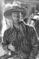

Country:United States, 55 minutes
Spoken languages:English
Genres:Action, Western
Director(s):Robert N. Bradbury
Writer(s):Robert N. Bradbury
Video Codec:Unknown
Number: 184


Certification:NR
Storyline:
James Kincaid controls the local water supply and plans to do away with the other ranchers. Government agent Sandy Saunders arrives undercover to investigate Kincaid's land swindle scheme, and win the heart of one of his victims, Fay Denton.
Cast: 


Medium: VHS tape,
Comments: Part of: John Wayne Western Collection Volume I
Loaned: No
Aspect ratio: Unknown